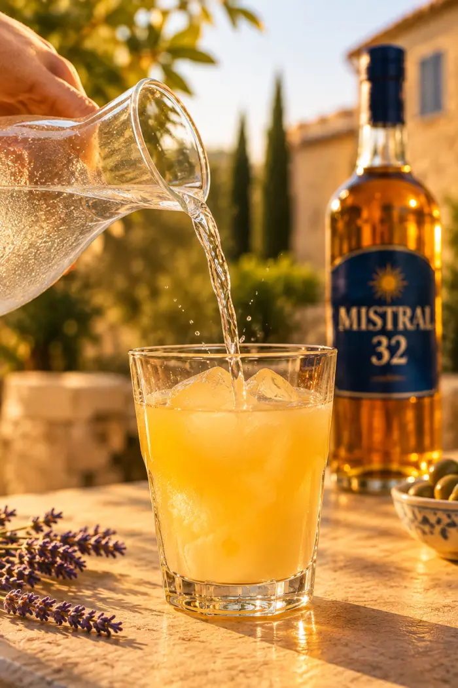

Donnez votre avis
Donnez votre avis
01
L'anis étoilé
La signature fraîche et anisée du pastis, qui s'exprime pleinement au contact de l'eau.
Pastisologie
Des plantes au verre, découvrez ce qui fait le caractère du pastis. Les arômes, les bons gestes et les petits secrets de Mistral 32.

01
La signature fraîche et anisée du pastis, qui s'exprime pleinement au contact de l'eau.
02
Une note douce et profonde qui accompagne l'anis et prolonge la dégustation.
03
Un bouquet végétal qui évoque le Sud et donne à Mistral 32 toute sa personnalité.

Dans un verre à pastis bien droit ou un verre ballon.
Une eau bien fraîche révèle tous les arômes de l'anis.
Le pastis se trouble et prend sa belle couleur jaune soleil.
Ajoutés à la fin, ils préservent tout le goût de la recette.
Dès que l'on ajoute de l'eau, le pastis se trouble et prend une teinte jaune pâle. Ce phénomène porte un nom : le louche.
Les huiles essentielles de l'anis, solubles dans l'alcool, se dispersent en fines gouttelettes au contact de l'eau. Elles diffusent la lumière : le verre devient alors délicatement laiteux.
Quelques repères pour mieux comprendre et apprécier votre pastis.
L'eau fraîche permet d'abord aux arômes de se déployer. Ajoutez ensuite les glaçons pour rafraîchir le verre sans brusquer la préparation.
Commencez par un volume de Mistral 32 pour cinq volumes d'eau bien fraîche. Ajustez ensuite la dilution selon votre goût.
Ces deux boissons partagent le goût de l'anis. Le pastis associe aussi la réglisse et d'autres plantes, pour un profil aromatique différent.
Original, Citron Bio ou Réserve : trouvez le Mistral 32 qui vous ressemble.
Découvrir nos pastis